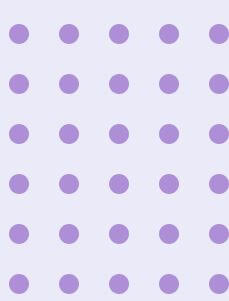

請選擇
經血過多小測試
子宮內膜異位風險小測試
1分鐘
子宮內膜異位症常出現在生育期的女性身上, 年齡可由十幾歲至更年期, 每十個有一個患上, 普遍延醫達數年。
來經時，經血倒流至盆腔內，其內膜組織到處著床於子宮腔外 (如卵巢等)，稱為子宮內膜異位症，可引起盆腔發炎，導致疼痛和難以受孕或不育。如形成朱古力瘤，或會膨脹, 嚴重時可爆裂。
常見症狀包括：經痛、盆腔/下背痛 性交期間/後疼痛或經期不規律等。
